11 Chapter 11 — The Body in Motion: 2D Keypoints to 3D Biomechanics
What stance tells you, what 2D cannot prove, and the escalation ladder to 3D
11.1 Pose Is Not the Pipeline Bottleneck
Chapter 5's E03 measured YOLO11-pose at 82 fps with a 16.46-keypoint mean on the pb-003 fixture — pose is not what slows a sports CV pipeline down. At 82 fps the pose stage costs roughly 12 ms per frame on an M4 Max, a fraction of the frame budget; the chapters that hurt are tracking (E02/E09) and the ball (E04, where the median detection confidence was 0.1125). What is genuinely hard about pose is knowing what the numbers mean. A knee angle is a number; whether it tells you anything about the player is a different question, and the answer has a sharp boundary that differs by sport, by camera, and by plane of motion.
The two worked sports sit at opposite ends of the pose-estimation difficulty curve. Pickleball's pb-003 fixture is a fixed elevated camera over a 13.41×6.10 m doubles court: players are large in frame, the camera never moves, and the action plane at the kitchen line is comfortably sagittal from a side-on view. Rugby league's nrl-001 grand-final clip is a broadcast PTZ feed over a 100×68 m field: players are small, the camera pans and zooms mid-play, and the moment that matters most — the tackle — is a two-body occlusion event viewed from whatever angle the broadcast director happened to choose. The same model family serves both, but the defensibility of every downstream number is different, and this chapter keeps that difference visible on purpose.
This chapter is the boundary map: what 2D pose can honestly support, when to escalate to 3D, and — most importantly — what you must never claim from a monocular camera. The discipline is simple to state and hard to keep: every biomechanical number you print carries an evidence tier, and the tier is set by the geometry and the validation literature, not by how clean the skeleton overlay looks.
11.2 The 2D Pose Catalog
2D pose estimation maps a person crop (or a full frame) to a set of anatomical keypoints. The architecture differences matter less than two purchasing decisions: the keypoint schema (what anatomical landmarks exist at all) and the runtime path (does it install and run on your machine without a build-chain fight). The catalog:
| Model | Keypoints | License | M4 Max | Use |
|---|---|---|---|---|
| YOLO11-pose (YOLOv8-pose lineage) | 17 | AGPL-3.0 | ✅ 82 fps (E03) | The book's measured baseline; stance + shape; one fused detection+pose call |
| RTMPose/RTMW (rtmlib) | 133 whole-body | Apache-2.0 | ✅ (ONNX→CoreML) | Whole-body incl. hands — paddle grip detection |
| MediaPipe Pose Landmarker | 33 + world landmarks | Apache-2.0 | ✅ GPU delegate | World landmarks = metric-ish 3D (real-world scale from the model); the published pickleball pilot's model |
| ViTPose/MMPose | 17-133 | Apache-2.0 | ⚠️ (mmcv friction) | Accuracy ceiling; ONNX export for production; use to score faster models, not as the default |
| RF-DETR Keypoints (Roboflow) | custom (trainable) | Apache-2.0 | ⚠️ [verify fine-tune path on MPS] | Sport-specific skeletons (paddle tip, tackle contact points) with per-keypoint uncertainty |
Three architecture notes worth carrying into production. First, RTMPose's SimCC head treats keypoint localisation as two 1D classification problems (one over x-buckets, one over y-buckets) rather than heatmap regression — that is why it exports cleanly to ONNX/CoreML and holds sub-pixel accuracy without a heatmap decode step, and why rtmlib (pip-installable, no mmcv) is the M4-native recommendation. Second, MediaPipe's differentiator is not the keypoint count but the world-landmarks channel: a second 33-point output in a metric, pelvis-centred coordinate frame. It is not true 3D, but it is a depth-normalised skeleton that makes angle computations far less camera-dependent than raw pixels — and it is the model used by the only published pickleball pose study (§11.5), which makes it the citation-backed baseline. Third, RF-DETR Keypoints is the schema escape hatch: a transformer detector with native keypoint heads that you fine-tune to a skeleton you define — paddle handle and paddle tip for pickleball, shoulder-contact and head-position landmarks for rugby league — with an uncertainty score per keypoint that lets the system admit when it does not know where the paddle tip is. That admission channel is the difference between a coaching tool and an overclaim generator.
Licenses are part of the catalog, not a footnote: YOLO11-pose's AGPL-3.0 wrapper flags any commercial reuse; RTMPose/rtmlib, MediaPipe, and RF-DETR are Apache-2.0; SMPL-family mesh models downstream of all of this are registration-gated (§11.6). Choose the schema and the license together, before the accuracy numbers seduce you.
11.2b The Skeleton Schema: 17 Points Buys Posture, 133 Buys Technique
The schema decision is where most sport pose projects quietly fail. COCO-17 gives you shoulders, hips, knees, ankles, wrists, elbows, and a sparse head — enough for gross posture, stance width, and sagittal knee angles, and blind to everything that distinguishes a good dink from a bad one. MediaPipe-33 adds foot direction, hand landmarks, and denser head points — enough for a body. RTMW-133 adds 21 keypoints per hand and per-foot detail — enough for grip state, wrist articulation through contact, and the toe-drag patterns of a split-step. The rule of thumb: racket-sport technique lives in the hands and feet; a 17-point skeleton cannot see it.
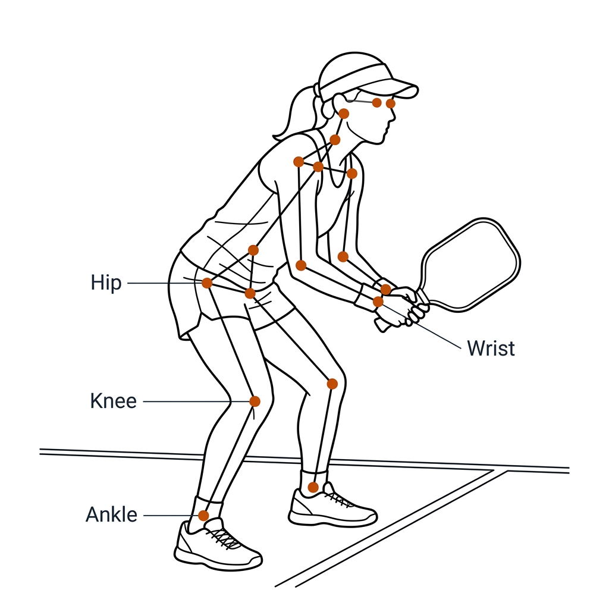
Rugby league stresses a different part of the schema. The tackle is a two-person occlusion event: the ball carrier's trunk hides the defender's arms, the ruck hides everything below the shoulders, and the keypoints that matter for tackle-height judgment — head position relative to the ball carrier's shoulder line — are exactly the ones most often occluded. A COCO-17 skeleton survives here if the task is coarse (body height at contact, hip-drop detection); anything finer wants either a whole-body schema or a custom RF-DETR skeleton trained on labelled tackle frames, with per-keypoint uncertainty gating what the coach is shown. The useful output is not a prettier skeleton overlay — it is a confidence-aware artifact: this tackle looks high, this frame is ambiguous, this shoulder angle needs human review.
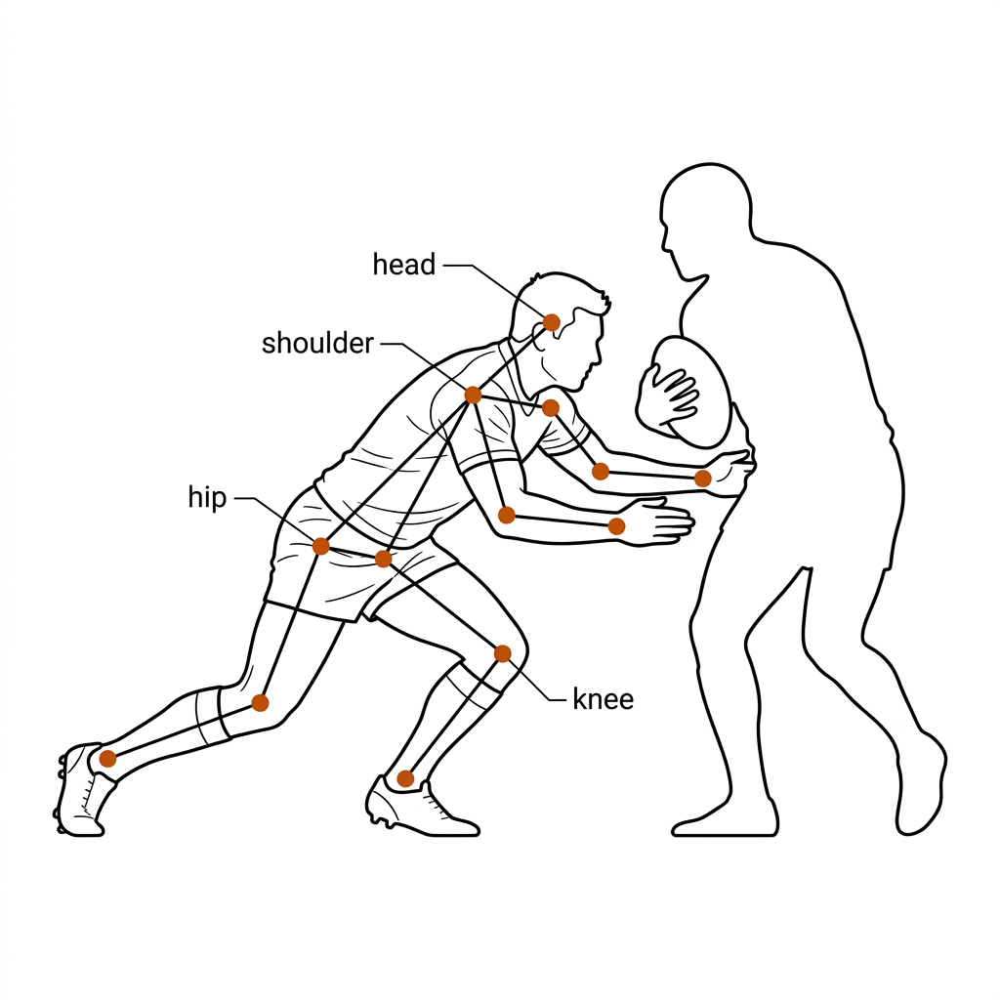
The forward path is equipment-as-keypoint. RacketVision (Nov 2025, on record) publishes a ball+racket pose schema — the racket as a pose target alongside the body. Fine-tune RF-DETR Keypoints on a labelled pickleball set with paddle handle and paddle tip landmarks and the paddle face angle becomes a measurable quantity instead of a coaching guess. Expect the paddle tip to be the hardest keypoint you ever label: small, fast, motion-blurred, and frequently occluded by the hand — which is precisely why the uncertainty channel matters more than the point estimate.
11.3 The Five Failure Modes of 2D
- Scale ambiguity: a 150-pixel person at 2m and at 10m are different physical sizes — pixel angles are not joint angles without camera geometry. Angles survive scale (they are ratios); absolute velocities do not. The book already owns the fix for feet: the homography chain (C06/E11, 3.82–4.65 cm RMSE) maps foot keypoints into court metres, and a measured player height pins segment lengths. In rugby's broadcast feed, where the zoom changes mid-play, even that chain needs per-frame recalibration — the chapter-6 Z-limit applies to bodies exactly as it applies to balls.
- No Z: depth is unobserved. A dink played toward the camera and a tackle driven along the camera axis both collapse into nearly static 2D skeletons while the real 3D motion is violent. Any depth claim from one camera is inferred from apparent-size change, which a loose jersey or a lunge corrupts.
- Foreshortening: projected limb length scales with the sine of the out-of-plane angle — a 40 cm shank rotated 30° toward the camera projects as 20 cm, and its image-space "angle" is meaningless. A player facing the camera has their knee angle compressed — the 155.6° mean in our lab measurement (§11.4) is partly this artifact, not the real stance. Sagittal-plane kinematics from a side-on camera are trustworthy; frontal/transverse-plane angles from the same camera are not. That one sentence kills more bad biomechanics claims than any model upgrade.
- Hallucinated occluded joints: a held ball hides a wrist; the paddle arm hides the trunk in a dink; a rugby ruck hides everything below the shoulders. Keypoint detectors do not omit occluded joints — they regress them from context and return plausible-looking confidence scores. Confidence is not correctness. Occlusion handling must be explicit: per-keypoint confidence thresholds plus an occluded state in the data model, never silent interpolation through a ruck.
- Out-of-plane rotation: the killer. Shoulder–hip separation — the serve's power metric in pickleball and the fend's power metric in rugby league — is a transverse-plane rotation. From a fixed side camera it is barely visible; from a panning broadcast camera it changes sign with camera angle. A player turning 90° to the camera makes nearly every angle unreadable. This is precisely when 3D escalation is justified, and it is the honest reason §11.3b exists.
11.3b The 2D→3D Lifting Problem: Monocular Depth Ambiguity
"Lifting" converts per-frame 2D keypoints into 3D joint positions. To see why it is hard, write the camera down. A pinhole projection maps a 3D joint X to image point p via λp̃ = K[R | t]X̃, where K is the intrinsics matrix, [R | t] the camera pose, and λ the unknown depth. Every point along the ray {C + λd} — the camera centre plus any positive multiple of the ray direction — projects to the same pixel. The 2D observation constrains the joint to a line, not a point. One frame, one camera: infinitely many 3D skeletons, all consistent with the evidence.
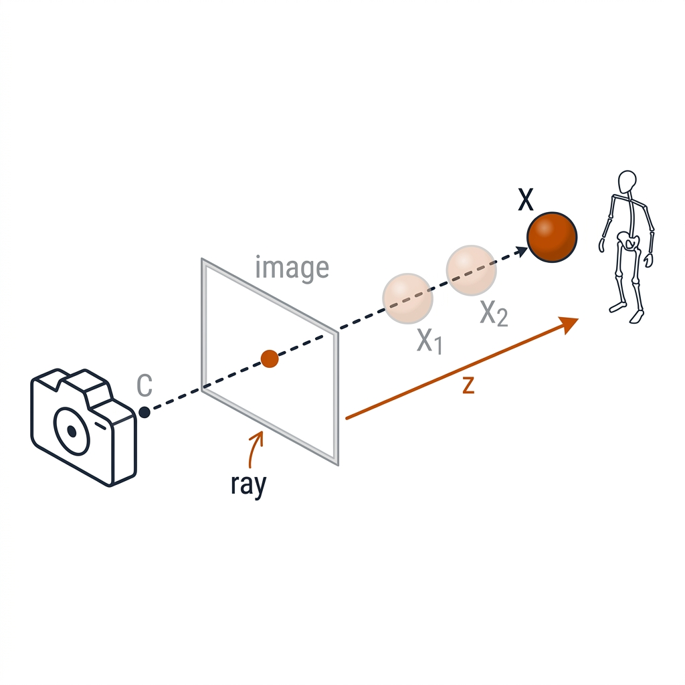
Three escalation tiers attack the ambiguity differently. MotionBERT (ACM MM 2022, MIT license) is the teaching tool: a temporal transformer over ~243-frame 2D keypoint windows that lifts your tracks to 3D joints. It runs on MPS on an M4 Max for clip-scale sequences, and its output must carry the honest label: lifting inherits every 2D error (§11.3's hallucinated joints become 3D hallucinations), and the depth axis it recovers is a learned prior over human motion, not a measurement — the skeleton will look plausible even when it is wrong. GVHMR (SIGGRAPH Asia 2024) is the escalation for real claims: world-grounded 3D — gravity-aligned global trajectory, explicit foot contacts, no root drift across the clip — by fusing the body with visual odometry (DPVO, CUDA-only upstream; an MPS fork ryanrudes/gvhmr exists [verify]). Its output is a SMPL-family mesh, which is the on-ramp to §11.6b's metrics. VGGT (CVPR 2025 Best Paper) is not a pose model at all — it is the scene side of the equation, recovering camera motion and scene geometry feed-forward, which is exactly what a panning nrl-001 broadcast feed destroys and what GVHMR's gravity-view frame needs. The 2026 pairing for single-video 3D is VGGT for the cameras and scene, GVHMR for the bodies. Each rung costs compute and inherits the errors of the rung below; the ladder diagram (Figure 11.1) keeps that inheritance visible.
11.4 What Our Lab Actually Measured (W3.2)
On 402 frames of the pb-003 rally with YOLO11-pose (lab/w3_lab_pose.py → experiments/c11-pose/outputs/metrics.json, E-ID: C11-lab):
| Measurement | Value |
|---|---|
| Pipeline speed | 72.1 fps |
| Frames with a visible leg | 382 / 402 (95%) |
| Visible keypoints mean | 16.86 / 17 |
| Knee flexion (left leg, first person) | mean 155.6°, min 27.7° (dink impact), p10 107.7°, p90 178.0° |
The 27.7° minimum is the interesting number — a deep crouch at the dink contact. The 155.6° mean and 180° max are mostly standing players, which is exactly why raw angle plots are meaningless without identity (chapter 9) and camera foreshortening correction. Read the distribution, never the average: the p10 (107.7°) marks the working range of rally movement, the p90 (178.0°) is near-full extension between points, and the minimum is the event. A single mean flattens all three into a number no coach can act on.
Two honesty notes on the measurement itself. The 72.1 fps here versus E03's 82 fps is a configuration difference, not a contradiction — different lab harness, same conclusion that pose is cheap. And 16.86 of 17 keypoints visible on average means the pipeline rarely loses a joint entirely on this fixture; the failures that matter are not missing points but confidently wrong ones (§11.3, mode 4). The rugby-league equivalent of this run does not exist yet on nrl-001, and the dossier flags why: the broadcast framing is often near-frontal, which may push even knee flexion out of the defensible column for rugby clips. That is a designed-not-run experiment (§11.10), and the chapter refuses to pretend the pickleball result transfers for free.
11.5 The Skill-Discovery Correction: Knee Angle vs Femur Flexion
The v1 book claimed a 124° knee flexion as a "ready stance" discriminator. The verified research says the opposite: a 2025 pickleball dink study (Edriss, Romagnoli et al., J Sports Sci 2025;43(17):1860–1870, PMID 40563204) found femur flexion significantly discriminates skill (p<0.001) but knee angle does NOT. The pilot ran 14 male players (mean age 46.5±10.5) through GoPro-captured dinks with a MediaPipe-based pipeline, and it produced a second positive result: high-level players show a distinct continuous wrist-motion pattern after ball contact (p<0.001) — a finding a COCO-17 skeleton cannot even see, and a direct argument for §11.2b's whole-body schemas.
The lesson is not "the book was wrong" — it is the publish-both discipline: report the metric you measured and the one the literature validated, and never assume a mechanical intuition is a skill signal without the study. The same discipline applies to the dink's equipment side. Coaching literature describes the dink arc as a soft, low-to-high lift over the net into the kitchen, produced by a nearly flat, marginally open paddle face — practitioner sources quote roughly 6.5° of paddle-face openness at contact [verify — coaching-convention figure, no instrumented study on record]. That number, if it holds, is the target a RacketVision-style paddle-keypoint pipeline (§11.2b) could actually measure. Until then it prints as [verify], not as fact.
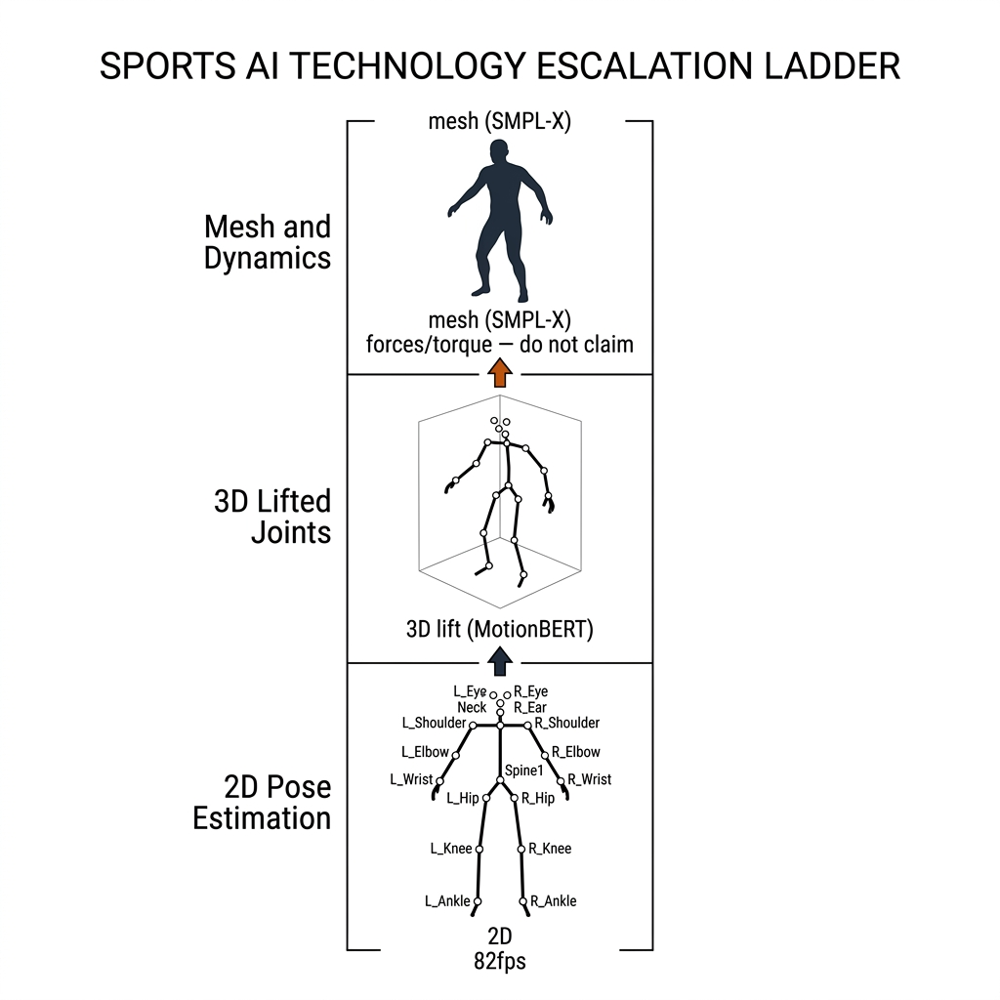
11.5b Markerless Mocap: MAMMA and the 4D Human
When the question genuinely needs 3D — multi-person interaction, out-of-plane rotation, a claim you intend to defend — the honest instrument is a capture environment, not a better monocular model. MAMMA (arXiv 2506.13040) is the open reference system: multi-view markerless motion capture that reconstructs 4D human motion — a 3D SMPL-X-class body tracked coherently through time — from ordinary cameras, no suits, no markers.
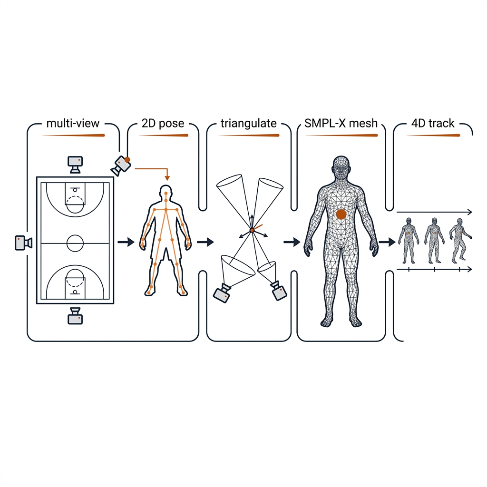
The pipeline stages each carry their own failure budget: camera synchronisation and extrinsic calibration set the ceiling (a few centimetres of calibration error become joint-position error at triangulation); per-view 2D pose contributes §11.3's hallucinations, now from several angles at once; triangulation resolves §11.3b's ray ambiguity by intersecting rays from two or more views — which is why it needs the cameras; mesh fitting then constrains the result to a body with fixed segment lengths and a surface. The rugby-league transfer is a controlled tackle drill: four or more cameras around a calibrated contact area, capturing tackle entry, contact, leg drive, and recovery, reconstructing both bodies to inspect body height, shoulder contact, hip angle, and head position with geometry that a broadcast feed will never provide. The pickleball transfer is a serve or third-shot drill: cameras around the court, shoulder–elbow–wrist–hip–knee reconstructed across repetitions to see whether a player is late, off balance, or collapsing through contact. The shared limitation: a paddle is not part of a human body model — MAMMA may recover the player beautifully while the implement still needs a separate object-tracking layer (§11.2b's paddle keypoints). The book value of MAMMA is not "use it for every match"; it is the calibration point that shows what a real capture environment buys and when setup friction is the price of a defensible 3D claim.
11.6 The Escalation Ladder to 3D
| Rung | Tool | Cost | What It Buys |
|---|---|---|---|
| 2D keypoints | YOLO11-pose / RTMW | ~70 fps | Stance, shape, coarse angles (C11 measured) |
| 2D→3D lift | MotionBERT (MIT, small) | ✅ M4 | 3D joints from 2D input; inherits 2D error (teaching tool) |
| World-grounded 3D | GVHMR (SIGGRAPH Asia 2024) | ⛔ upstream (DPVO CUDA); MPS fork [verify] | Gravity-anchored SMPL recovery; camera pose jointly estimated |
| Scene 3D | VGGT (CVPR 2025 Best Paper) | ⚠️ MPS port [verify]; CC-BY-NC weights [verify] | Feed-forward scene + camera reconstruction — moving cameras |
| Parametric mesh | SMPL-X | registration-gated license | Segment-length-stable meshes, CoM, surface contact; license blocks redistribution |
| Multi-view mocap | MAMMA (arXiv 2506.13040) | ⛔ capture environment, not a download | 4D reconstruction of multiple bodies; drill setups, not broadcast |
Read the ladder as an error-inheritance chain, not a feature list: every rung consumes the output of the rung below, so 2D hallucinations become 3D hallucinations become mesh hallucinations with higher production values. The commercial contrast keeps the ladder honest: Hawk-Eye's SkeleTRACK (29 skeletal points, on record) and PlayReplay's four-camera 3D system solve the same problems with multi-view rigs — the top floor is a purchasing decision the single-camera reader does not have, which is exactly why this chapter teaches what one camera can defend. And a license warning that bites in practice: SMPL-X model files are registration-gated and non-redistributable — readers register and download personally, the book's repo ships nothing, and commercial coaching products need a separate commercial license. The labs degrade gracefully by design: everything in §11.6b that needs only joints works without the mesh.
11.6b Biomechanical Metrics That Survive: Angles, Angular Velocity, Centre of Mass
Three metric families are computable from joints alone, and each has a known noise behaviour the chapter states rather than hides.
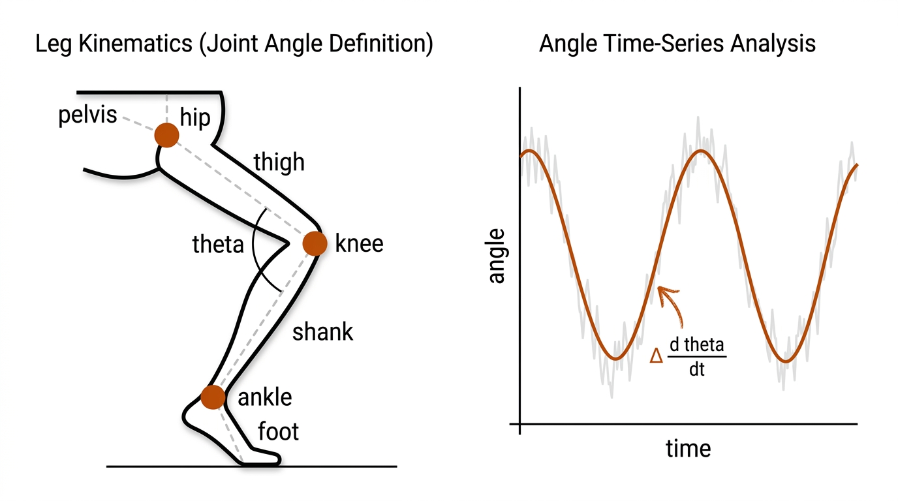
Joint angles are vector arithmetic: with hip H, knee K, ankle A, the knee flexion angle is the arccosine of the normalised dot product of the thigh vector (H−K) and shank vector (A−K). Ratios cancel scale, which is why angles are the one number that survives §11.3's scale ambiguity — in the plane of the camera. Angular velocity is dθ/dt, and the catch is differentiation: at 82 fps, Δt = 12.2 ms, so a keypoint jitter of σ pixels becomes angle noise, and finite differencing multiplies that noise by roughly 1/Δt — differentiate an unsmoothed trace and you publish jitter, not biomechanics. The rule: smooth first (a Savitzky–Golay window, and state the filter in the caption), then differentiate, then clip the residual spikes. A pickleball serve's shoulder angular velocity and a rugby fend's arm-sweep rate are both meaningful this way; the same numbers without the filter are artifacts. Centre of mass is a weighted sum: CoM = Σ miri / Σ mi over body segments, with segment masses from standard anthropometric tables. From keypoints alone it is a guess near the hips; from a SMPL-family mesh with fixed segment lengths it becomes an estimate with a statable error budget (anthropometric table variance times pose noise — quantifying it is a designed-not-run lab, §11.10). CoM height through a tackle — the ball carrier's drop versus the defender's hip hinge — is the rugby-league metric with the clearest coaching story, and it is also the one most sensitive to getting the mesh step right.
11.7 Defensible vs Not-Defensible Biomechanics
Defensible from monocular video: knee flexion (as a trace, not a skill score — §11.5), spine angle, centre-of-mass height (with a calibrated model and a stated error budget), angular velocity (smoothed, filter stated), shoulder–hip separation (3D only, and only if the lift is validated). NOT defensible: joint forces, joint torque, composite injury-risk indices. Ground-reaction forces need force plates or a validated full-body dynamics model with a contact model; monocular video has neither. Torque is inverse dynamics — force estimates times segment inertias — so it inherits the force problem and adds mass-distribution error on top. Papers exist for both; none are validation-grade for individual athletes. Print them as open problems, not features.
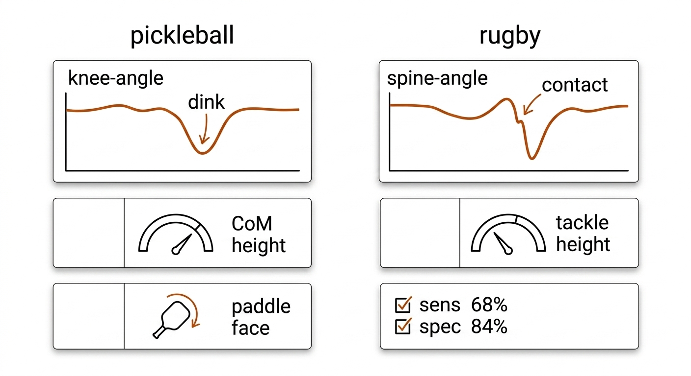
The rugby-league case study is the sobering anchor. Bath et al. 2025's video-based tackle classifier — the head-on-head tackle-outcome screen on record — runs at ~68% sensitivity and 84% specificity. Translate that to a season: one genuinely dangerous tackle in three passes the screen undetected, while one clean tackle in six gets flagged. At 68% sensitivity you never gate an athlete; the screen informs a qualified human review and nothing more. Practitioner tackle-kinematics reports quote peak trunk/spine decelerations at contact on the order of 11.8 m/s² [verify — unit, sensor protocol, and cohort all unconfirmed] as the risk-relevant spike; even taken at face value, that number comes from instrumented or mocap-grade capture, not from broadcast video, and no monocular pipeline may print its own version of it. The pickleball mirror is gentler but structurally identical: paddle-swing kinetics — the forces and torques behind the drive — are unobservable from video, while swing kinematics (shoulder and wrist angular velocity, §11.6b) are measurable. Kinematics describe; kinetics explain; video sees the first and must not narrate the second.
The DorsaVa AMI evidence-tier warning completes the pattern: sensor-based (IMU) systems carry published concurrent validity against Vicon for specific measured angles, but markerless-video and composite risk-index claims are markedly weaker — systematic reviews find markerless validity moderate-to-high in the sagittal plane and poor-to-variable in frontal and transverse planes. Computable is not the same as permissible, and a composite score that averages a good plane with two bad ones is a liability wearing a dashboard.
11.7b The Use-Case Catalog: Ten Pose and Biomechanics Applications
The ten use cases below are the applied bridge from the defensibility framework above to the two sports. They follow four categories: A. Stance & Readiness Auditing (01-03), B. Swing & Strike Mechanics (04-06), C. Balance, Contact & Injury Risk (07-08), and D. 3D Reconstruction Escalation (09-10). Each case pairs a pickleball and a rugby league application, states its mechanism and math, and carries its evidence label: measured (book experiment, E-ID), source-backed (paper), or [verify] (practitioner model, not yet established). Every claim is bounded by §11.7's defensible/not-defensible line and §11.8's consent rule — a use case that crosses either is flagged in place, not quietly dropped.
Category A: Stance & Readiness Auditing (UC 01-03)
UC 01 — Ready-Stance Knee and Femur Angle Audit (Kitchen Line)
Kitchen-line firefights are decided in under 250 ms, and an upright stance costs the reaction time those milliseconds represent; the coach's need is an objective, session-level audit of ready position rather than a hunch from the sideline. The mechanism is the cheapest one in the chapter: run YOLO11-pose (82 fps measured, E03) or RTMW over the rally, track one identity first (chapter 9), then compute knee flexion θk = arccos(((H−K)·(A−K))/(|H−K||A−K|)) and femur flexion versus vertical per frame. The audit metric is the fraction of pre-contact frames inside the coach's target band — a distribution read (p10/median/min), never a mean: §11.4's 155.6° mean conceals the 27.7° dink-contact crouch. Evidence label: the pipeline is measured (C11-lab, 72.1 fps, 16.86/17 keypoints); the ~124° ready-stance target is a coaching convention [verify], and the published dink study found femur flexion — not knee angle — discriminates skill (PMID 40563204), so the audit reports both angles side by side.
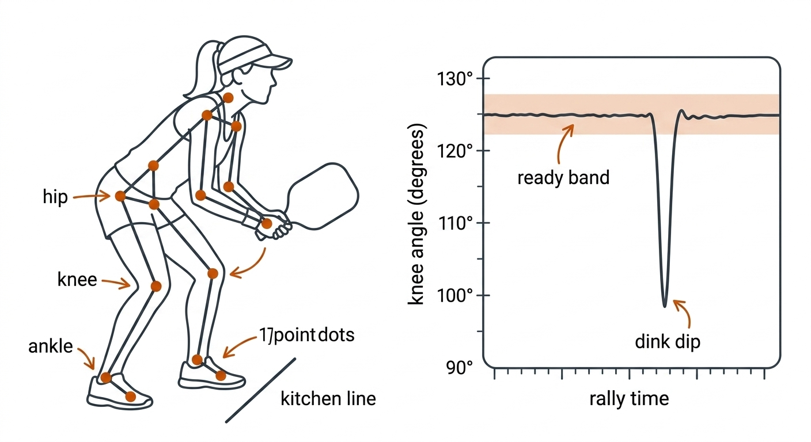
Payoff: coaching — a stance-discipline number per session that survives §11.5's skill-metric correction, because it audits consistency against the athlete's own band, not a population claim.
UC 02 — Tackle Stance Height Audit
Rugby league's high-tackle crackdown makes body height at contact the welfare and officiating metric of the era; the coach and the reviewer both want an objective record of where the defender entered. The mechanism: head, shoulder, hip, and ankle keypoints give a body-height proxy (head height above the ankle line, normalised by the player's standing height), and a hip-velocity sign change flags the hip-drop entry; tackle-height classification then compares the tackler's shoulder keypoint against the ball carrier's sternum line. The evidence cap is on record: Bath 2025's video classifier runs at 68% sensitivity / 84% specificity, so the output is a review prompt — one genuinely high tackle in three passes the screen. A second honesty note: nrl-001's near-frontal broadcast framing may push even this sagittal-flavoured metric out of the defensible column for rugby clips (§11.3, foreshortening; §11.10 lists the designed-not-run measurement).
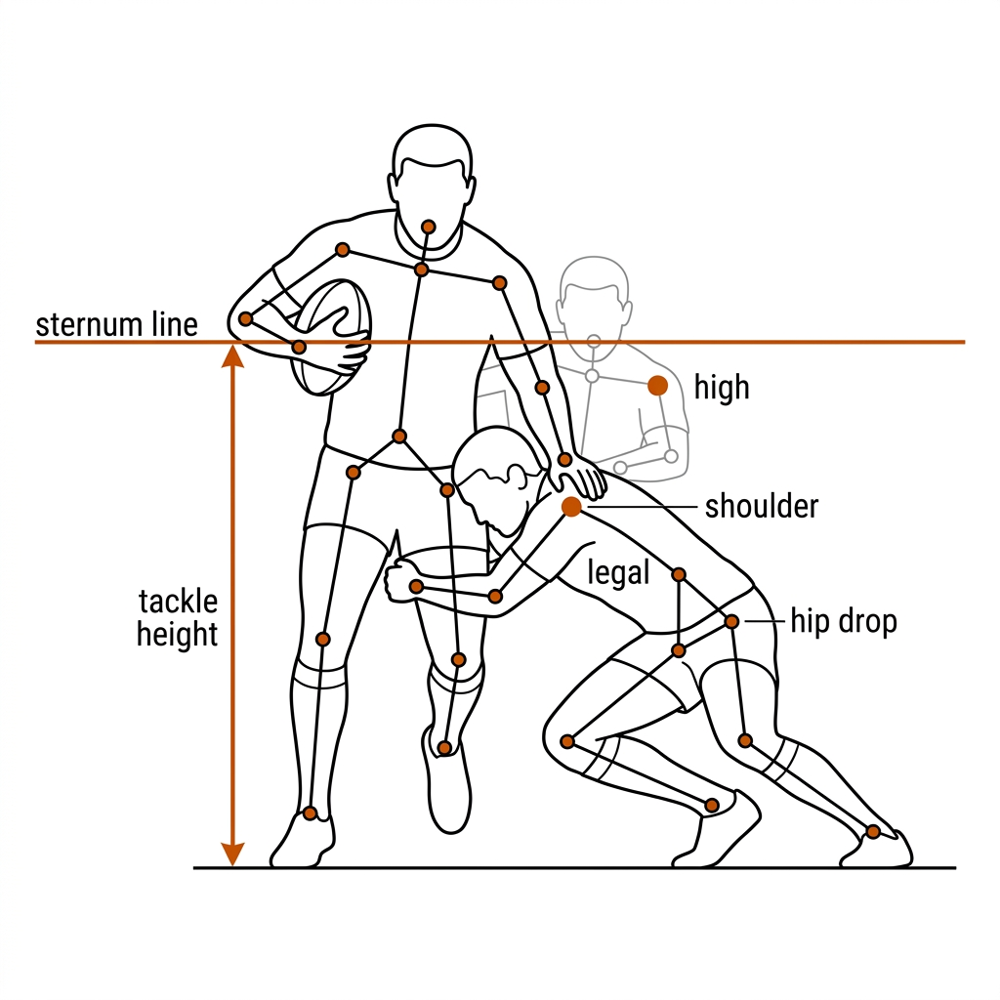
Payoff: officiating and welfare — informs a qualified human review at Bath-2025 performance, never gates an athlete (§11.7, §11.8).
UC 03 — Fatigue Detection via Joint-Velocity Degradation
Fatigue degrades mechanics before the athlete reports it, and a repeat drill gives the pipeline a controlled signal to watch. The mechanism: for a fixed drill (a dink ladder, a tackle-tech set), compute peak angular velocity ωpeak = max(dθ/dt) of the working joint per set — elbow for the dink arm, hip extension for the tackle drive — after smoothing (§11.6b's rule: differentiate an unsmoothed trace and you publish jitter). The fatigue flag trips when ωpeak falls below a fixed fraction of the athlete's own set-1 baseline for two consecutive sets; the 15%-drop threshold is a practitioner convention [verify — no published monocular-video fatigue threshold], which is why the flag is a stop-the-drill prompt for the coach, not a diagnosis.
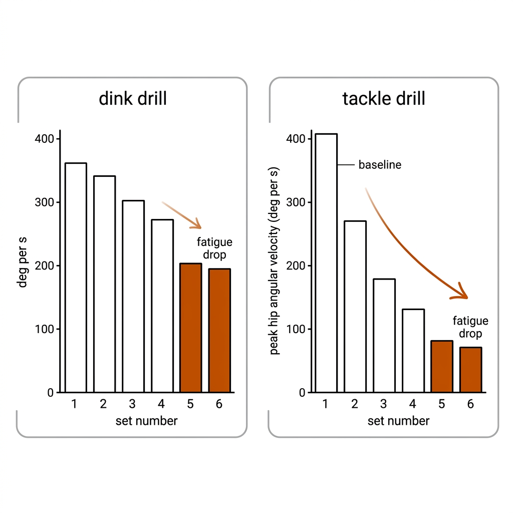
Payoff: load management — stop the drill when mechanics break, not when the set count says so.
Category B: Swing & Strike Mechanics (UC 04-06)
UC 04 — Paddle Swing Arm Path
The coaching cue "soft, low-to-high lift" for the dink and "long accelerating arc" for the drive are trajectory claims, and the wrist keypoint is where they become measurable. The mechanism: track the wrist through the swing, map it to court metres with the homography chain (E11, 4.65 cm RMSE on feet — the same chain applied to the wrist plane), and report path length, low-to-high slope at contact, and the elbow-extension trace θe(t). The schema caveat is the published one: COCO-17 has a wrist dot but cannot see the continuous post-contact wrist-motion pattern that discriminated skill in the dink study (PMID 40563204) — that wants RTMW-133's hand keypoints or an RF-DETR paddle-landmark skeleton (§11.2b), with the uncertainty channel gating what the coach is shown.
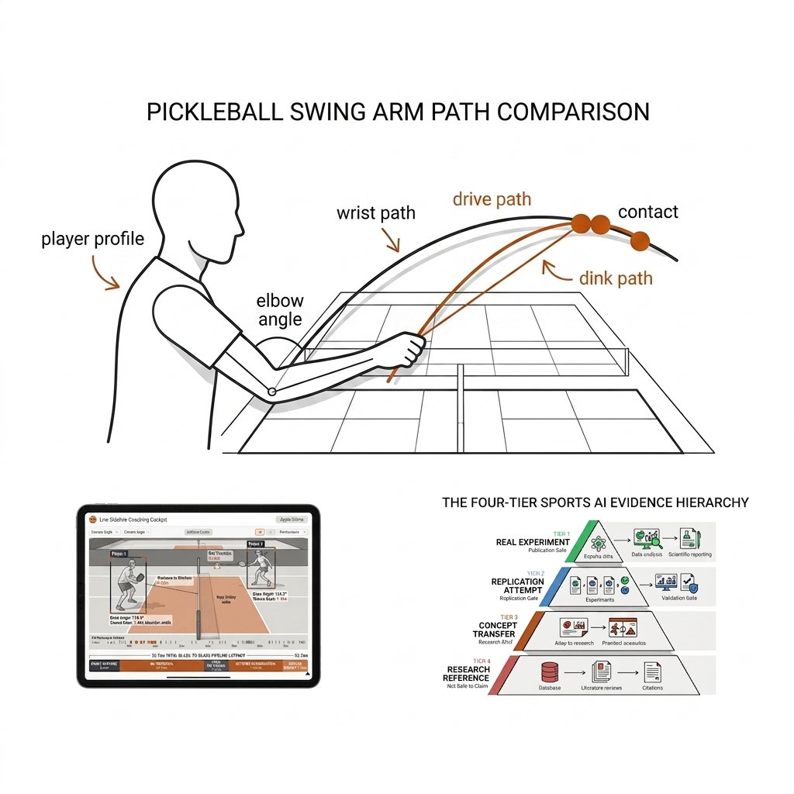
Payoff: technique coaching — shot-class mechanics the athlete can compare against their own baseline, session over session.
UC 05 — Kick Mechanics: the Conversion Kinematic Sequence
The conversion is rugby league's most reproducible closed skill — same ball placement choice, same approach ritual, no defender — which makes it the cleanest kinematic-sequencing target in either sport. The mechanism: extract hip, knee, and ankle angular velocities from the kicking-leg trace and check proximal-to-distal ordering, t(hip) < t(knee) < t(ankle) at peak ω; the approach angle comes from foot keypoints mapped through the homography, and plant-foot placement is measured relative to the ball. Kinetic-chain sequencing is established biomechanics; the per-frame peaks require the §11.6b smoothing discipline, and no published monocular-video conversion kinematics exist for rugby league [verify] — the use case is the measurement protocol, defensible because the skill is closed and the camera can be fixed side-on.
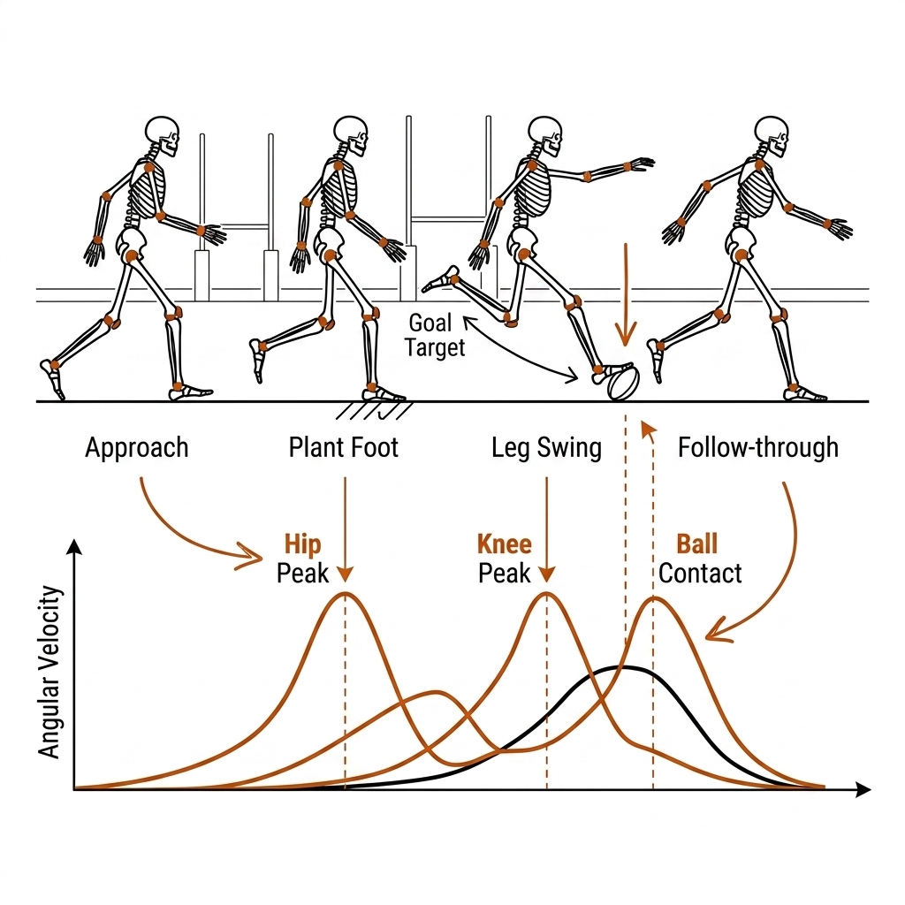
Payoff: technique coaching and talent identification — sequencing breaks are visible before distance or accuracy drops.
UC 06 — Shoulder External Rotation on the Overhead Smash
The overhead smash loads the shoulder near maximal external rotation — the apprehension position — and pickleball's demographic (the dink pilot's mean age 46.5±10.5) makes overuse tracking genuinely relevant. The honest mechanism is a two-tier one: shoulder ER is an out-of-plane rotation, so §11.3's failure mode 5 makes it unmeasurable from monocular 2D; what 2D can do is flag the trophy pose (elbow above shoulder line, arm cocked behind the head plane) and count smash volume, routing flagged clips to a 3D lift (UC 09) for the rotation itself. Evidence label: [verify — practitioner model]; defensible as a counting and routing tool, not as an ER-degree claim, and any risk interpretation goes through §11.8's consent gate.
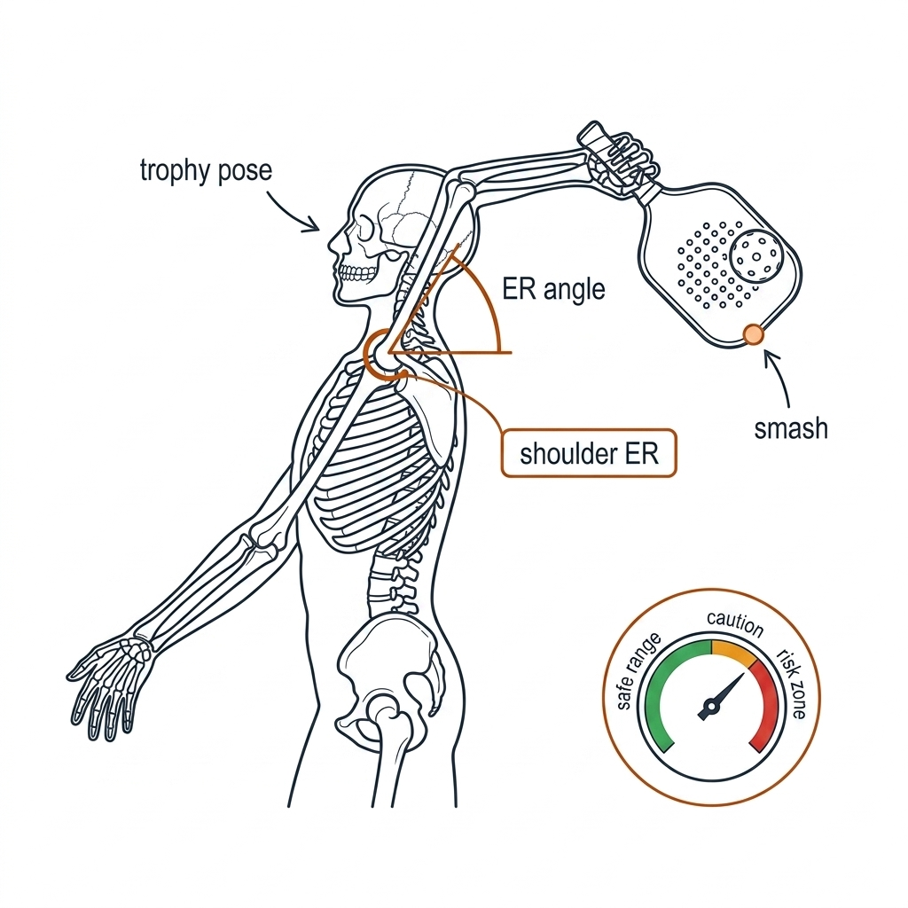
Payoff: injury-risk flag for qualified human review — volume and posture, never an automated clearance (§11.7).
Category C: Balance, Contact & Injury Risk (UC 07-08)
UC 07 — Centre-of-Mass Tracking for Balance
Balance is centre of mass over base of support, and both sports monetise it: the split-step's CoM drop times the pickleball player's first step, and the ball carrier's CoM leaving the base marks the fend that beats the tackle. The mechanism: a CoM proxy from segment-weighted keypoints (anthropometric tables) or — cheaply and honestly — the mid-hip keypoint with a stated error budget; the feet, mapped to court metres by the homography (E11), define the base polygon; the balance margin is the horizontal distance from the CoM's ground projection to the base edge. The mesh refinement (SMPL-X CoM, §11.6 rung 5) tightens the estimate; the full anthropometric-variance × pose-noise error budget is a designed-not-run lab item (§11.10).
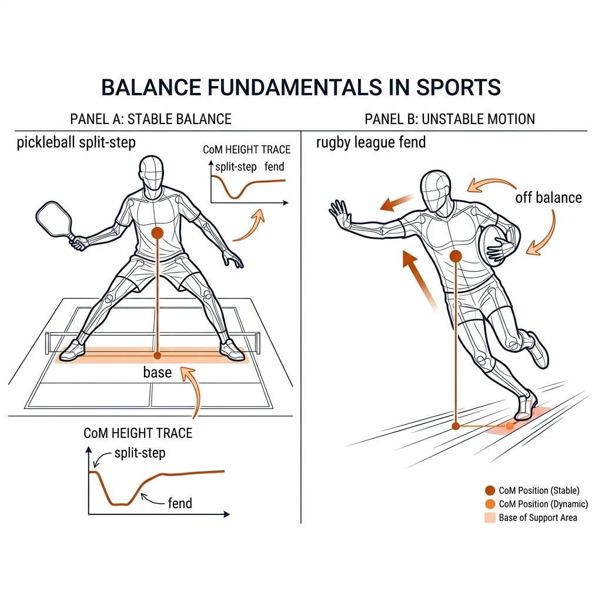
Payoff: tactical and coaching — a timing metric (PB) and an opportunity signal (RL) from one shared computation.
UC 08 — Spine Alignment in the Tackle
Spine position at contact is the tackle's welfare variable: head-down entries and bolt-upright postures are the two failure shapes coaching is trying to remove. The mechanism: the pelvis-to-neck vector gives a spine segment; its angle against vertical (sagittal plane, side-on camera) is a defensible trace, and head-position-relative-to-ball-carrier-hip marks the head-side choice. The number practitioners quote — peak trunk deceleration on the order of 11.8 m/s² at contact [verify — unit, sensor protocol, and cohort unconfirmed] — comes from instrumented cohorts and is not computable from broadcast video; the video-defensible claim is the angle trace plus the Bath-2025 classification cap (68%/84%), and the §11.7 line holds: forces and risk indices stay off the dashboard.
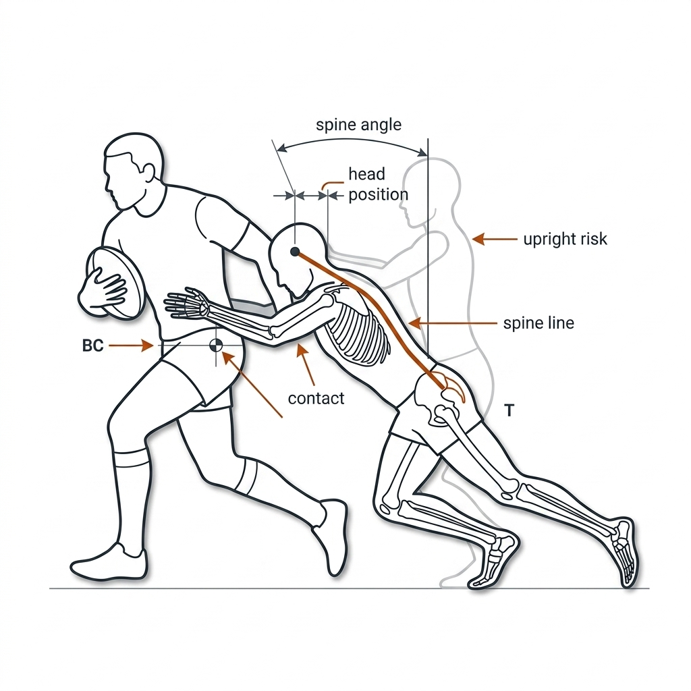
Payoff: welfare screening input for qualified review — never an automated sanction, per the Bath-2025 cap and §11.8's consent rule.
Category D: 3D Reconstruction Escalation (UC 09-10)
UC 09 — 2D-to-3D Lifting Under Depth Ambiguity
The metrics Categories A-C cannot reach — shoulder–hip separation on the serve, fend rotation, true shoulder ER (UC 06) — are out-of-plane, and the cheap escalation is lifting. The mechanism: MotionBERT (ACM MM 2022, MIT) runs a temporal transformer over ~243-frame windows of your 2D tracks and emits 3D joints; the pinhole ambiguity of §11.3b (λp̃ = K[R | t]X̃, one pixel = one ray) is resolved by a learned motion prior — plausible, not measured. Two honesty labels travel with every output: lifting inherits every 2D error (§11.3's hallucinated joints become 3D hallucinations), and the depth axis is a prior over human motion, so the skeleton looks right even when it is wrong. It runs on MPS on an M4 Max for clip-scale sequences — the reader's first 3D result in an evening.
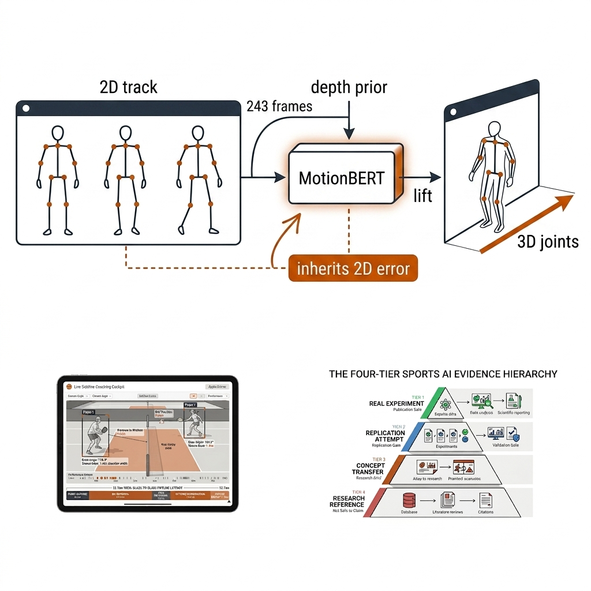
Payoff: the teaching tool — out-of-plane angles for the first time, with the inherited-error label attached, before any GVHMR or MAMMA escalation.
UC 10 — MAMMA-Style 4D Reconstruction of the Tackle Drill
Broadcast will never yield defensible 3D of a tackle; a controlled drill with four or more calibrated cameras will, and that is a purchasing decision, not a model upgrade. The mechanism is the MAMMA stack (arXiv 2506.13040): per-view 2D pose, then triangulation that resolves §11.3b's ray ambiguity by intersecting rays from two or more views, then SMPL-X mesh fitting, yielding a temporally coherent 4D track of both bodies through entry, contact, leg drive, and recovery. Each stage's error feeds the next — calibration error becomes joint-position error at triangulation — so the calibration grid sets the ceiling, and the SMPL-X license (registration-gated, §11.6) means the reader registers personally; the repo ships nothing.
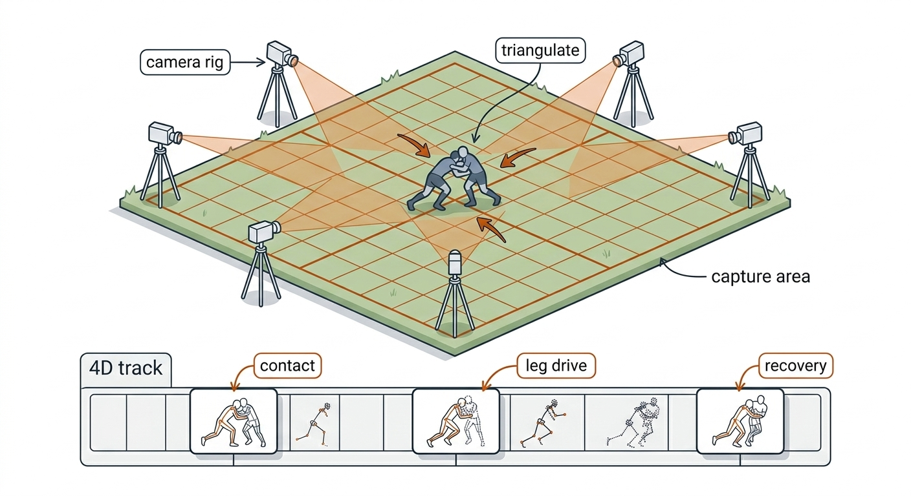
Payoff: research-grade claims — the only honest route to contact mechanics, and even here §11.7 holds: forces stay inverse dynamics, not video output.
11.7c Runnable Implementation: the Angle-and-Velocity Core
Every use case in §11.7b reduces to four functions over a tracked single-identity keypoint sequence (chapter 9 first, always). This is the starting skeleton; the full harness lives in the book's lab (lab/w3_lab_pose.py → experiments/c11-pose/):
import numpy as np
from scipy.signal import savgol_filter
def joint_angle(a, b, c):
# Angle at b between segments b->a and b->c. Ratios cancel scale (§11.3),
# which is why angles are the one number that survives a single camera.
v1, v2 = np.asarray(a) - b, np.asarray(c) - b
cos = np.dot(v1, v2) / (np.linalg.norm(v1) * np.linalg.norm(v2))
return np.degrees(np.arccos(np.clip(cos, -1.0, 1.0)))
def angle_trace(kpts_seq, i, j, k):
# kpts_seq: (T, 17, 2) COCO keypoints, ONE tracked identity.
# Knee flexion: hip=11/12, knee=13/14, ankle=15/16 (L/R).
return np.array([joint_angle(f[i], f[j], f[k]) for f in kpts_seq])
def angular_velocity(theta, fps, window=11, poly=3):
# Filter BEFORE the derivative (§11.6b): raw finite differences publish jitter.
smooth = savgol_filter(theta, window, poly)
return np.gradient(smooth, 1.0 / fps)
def stance_audit(theta, band=(110.0, 140.0)):
# UC 01: fraction of frames in the coach's band + the distribution read.
# Never report the mean alone — the 155.6° mean hid the 27.7° crouch (§11.4).
return {"in_band": float(np.mean((theta >= band[0]) & (theta <= band[1]))),
"p10": float(np.percentile(theta, 10)),
"min": float(theta.min())}
def fatigue_flag(peak_omega_per_set, drop=0.15, consecutive=2):
# UC 03: flag when peak dθ/dt stays below (1-drop) × set-1 baseline.
# Threshold is practitioner convention [verify] — a stop-the-drill prompt.
base = peak_omega_per_set[0]
low = [p < (1.0 - drop) * base for p in peak_omega_per_set]
run = 0
for s, is_low in enumerate(low):
run = run + 1 if is_low else 0
if run >= consecutive:
return {"fatigue_flag": True, "at_set": s}
return {"fatigue_flag": False}
11.7d What This Adds to the Pipeline
The ten use cases are not ten projects; they are the pose layer applied across the book's verbs, each extending an existing chapter rather than duplicating it. Identity comes first — every trace assumes chapter 9's tracking (E09, BoT-SORT HOTA 0.814) has already pinned one skeleton to one athlete. The homography chain (chapter 6, E11: 3.82-4.65 cm RMSE) is what turns pixel traces into court metres for UC 04's wrist path and UC 07's base of support. Contact events from the ball layer (chapter 12) anchor the waveforms — UC 01's dink dip and UC 03's per-set peaks mean nothing without the shot axis. UC 01 and UC 04 feed chapter 22's stroke-quality ΔEPV features; UC 02, UC 06, and UC 08 feed the chapter-28 cockpit as review prompts with their Bath-2025 caps attached; UC 09 and UC 10 are the escalation path chapter 10's SAM-3D-Body use cases (UC 07/08 there) gesture at from the segmentation side. And every use case inherits §11.8's consent gate and chapter 31's governance: pose is biometric, screening runs only on consented footage, and no composite score gates an athlete.
11.8 Ethics: Pose Is Biometric
Joint angles and meshes are biometric data (Australian Privacy Act / GDPR sensitive-category data). A 33-keypoint skeleton sequence is person-identifying — gait is a biometric — and health-revealing: asymmetries imply injury history. The inference asymmetry is the sharp edge: the pipeline can compute a knee-valgus proxy from broadcast footage without the athlete ever opting in, so the book's rule is that biomechanical screening runs only on footage the subject consented to for that purpose; broadcast-derived pose is for tactical and technical analysis, not health inference. Never publish per-athlete biomechanics without consent; never screen or gate athletes on markerless composite scores; the chapter-31 rights discipline applies at the measurement stage, not just publication. Both worked sports raise the bar in their own way: pickleball's demographic skews older (the pilot's mean age was 46.5), and rugby league pathways include minors — consent and duty of care scale accordingly.
11.9 The Pose-to-Biomechanics Recipe (Copy This)
- Question first: stance (2D), serve mechanics (3D-mesh), or injury risk (STOP — you need markerless mocap + medical review, not monocular video).
- Identity first: track the same player across the rally (chapter 9) before computing angles — mixing skeletons corrupts the time series.
- 2D extraction: YOLO11-pose (82fps measured) for the one-model pipeline, or RTMW for whole-body incl. the paddle hand; consider RF-DETR Keypoints when you need paddle-tip or contact-point landmarks with uncertainty.
- Occlusion state: per-keypoint confidence thresholds plus an explicit occluded state; never interpolate silently through a ruck or a ball-hiding-wrist frame.
- Angle computation: knee, hip, spine — report deflections (min/max/p10/p90), never a single average (the 155.6° mean hides the 27.7° crouch).
- Filter before derivatives: smooth the trace (state the filter), then compute dθ/dt; never differentiate raw keypoints.
- Foreshortening check: is the player facing the camera? If yes, the angle is compressed — label it or escalate.
- Escalate only for the question 2D cannot answer: 3D lift (MotionBERT, inherit 2D error), world-grounded 3D (GVHMR, Colab), mesh (SMPL-X if licensed), multi-view mocap (MAMMA, if the claim justifies a capture rig).
- Ethics gate: angle traces are biometric — no per-athlete publication without consent; never a screening/gate.
11.10 What I Would Measure Next
- RTMW on the pb-003 rally: whole-body 133kp (paddle grip state) at M4 speed — does it resolve the PMID 40563204 wrist pattern?
- MotionBERT 3D lift on a serve clip: does lifted 3D fix the foreshortening of the knee trace? (it inherits 2D error, so compare)
- GVHMR 3D mesh on a serve via Colab — the publishable 3D biomechanics figure; then the same on an nrl-001 tackle, where the PTZ pan is the stress test and the failure gallery is itself a result.
- Knee-angle defensibility on broadcast rugby: one measured statement per sport, not a shared claim — nrl-001's near-frontal framing may push even sagittal metrics out of the defensible column.
- CoM error budget: one quantification pass over anthropometric-table variance × pose noise, so §11.6b's "statable error budget" ships with numbers.
- RF-DETR paddle-keypoint fine-tune: handle + tip landmarks, so the 6.5° paddle-face claim [verify] becomes a measurement instead of a coaching convention.
11.11 Sources
- RTMPose/RTMW — rtmlib (Apache-2.0, github.com/Tau-J/rtmlib); RTMPose paper (arXiv 2303.07399, CVPR 2023). MediaPipe Pose Landmarker (Apache-2.0, ai.google.dev). MMPose/ViTPose (Apache-2.0, mmcv friction; arXiv 2204.12484).
- RF-DETR Keypoints (Apache-2.0, github.com/roboflow/rf-detr; Roboflow keypoints blog).
- MotionBERT (MIT, arXiv 2210.06551); GVHMR (SIGGRAPH Asia 2024, arXiv 2409.06662; MPS fork ryanrudes/gvhmr [verify]); VGGT (CVPR 2025 Best Paper, arXiv 2503.11651; weights CC-BY-NC [verify]).
- SMPL-X — registration-gated, non-redistributable (smpl-x.is.tue.mpg.de; arXiv 1904.05866) — cite, don't ship. MAMMA markerless mocap (arXiv 2506.13040; github.com/cuevhv/mamma).
- Pickleball dink kinematics pilot: Edriss, Romagnoli et al., J Sports Sci 2025;43(17):1860–1870 (PMID 40563204) — femur flexion discriminates skill (p<0.001); knee angle does NOT.
- Markerless validity review (Sensors 2026, mdpi.com/1424-8220/26/12/3956); DorsaVi concurrent validity (PMC9559006).
- Lab:
lab/w3_lab_pose.py→experiments/c11-pose/outputs/metrics.json(72.1 fps, 155.6° mean, 27.7° min, C11-lab). Bath 2025 tackle classification (68% sens / 84% spec, on record; primary citation [verify]). Paddle-face 6.5° and spine deceleration 11.8 m/s² are practitioner-convention figures [verify].